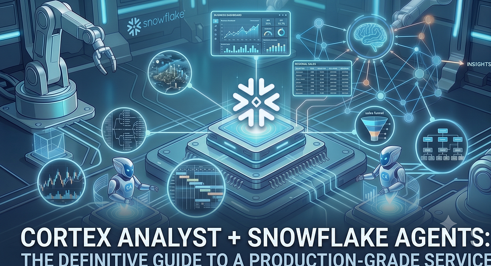
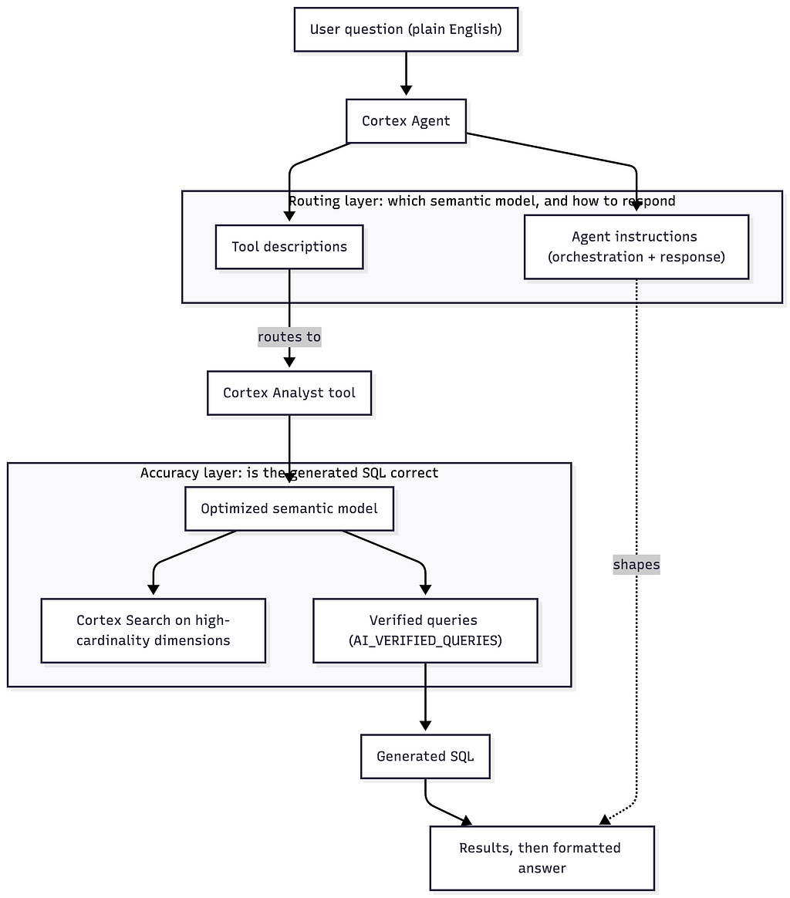
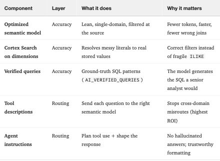

Cortex Analyst与Snowflake Agents：打造生产级分析服务指南
译文 AI 逐段翻译

在我参与的几乎每一个 Cortex Analyst 或智能体项目中，对话的开场白总是一样的：“响应时间太长”或“结果不正确”。而我的第一个问题也总是相同的。你究竟是如何设置你的分析服务的？你的语义模型长什么样？你的编排指令正确吗？你真的花时间编写工具描述了吗？
大多数时候，诚实的回答是否定的。不是因为团队能力不行——而是因为这些部分看起来像是一次性设置，设置完就可以继续前进。但它们并非如此。每一个都悄然影响着整个服务响应的速度和正确性，而当它们仓促完成时，性能会以难以追溯原因的方式下降。所以人们责怪模型或平台，而真正的问题在于基础从未得到应有的关注。
我观察过太多次这样的情形，以至于坚信一件事：Cortex Analyst 服务有一些关键部件，每个都必须正确，而只做对其中一个而忽略其余部分，正是许多部署显得迟缓或不可信的原因。让它们协同工作，曾经超时或回答错误的问题就会返回正确、格式化且快速的结果——就像资深分析师会回答的那样。
所以这是我希望在团队开始之前就能交给他们的指南。它涉及那些真正决定你的服务是否有效的部分：优化语义模型、使用 Cortex Search 解决杂乱值、使用已验证查询锚定 SQL以及使用工具描述和代理指令路由问题。没有“你好世界”，没有重新教如何创建语义视图——我假设你已经有一个了。接下来要做的就是让它达到生产级。
你将学到：
- 如何在不重建的情况下让现有语义视图精简、快速且准确
- 如何使用针对结构化列的 Cortex Search 服务，以便模型基于真实值进行过滤而不是猜测
- 已验证查询如何作为地面实况锚点，教导模型你领域的 SQL
- 工具描述和代理指令如何将每个问题路由到正确的位置——在多工具智能体中这是最大的杠杆
- 如何判断它是否真的有效，以及如何迭代
思维模型：两层，四个组件
在动手之前，最好把整个系统记在心里，因为四个组件清楚地分为两层，各自解决不同的问题。

- 准确性层——语义视图及其已验证查询——决定了当问题落在正确的语义模型上时 SQL 是否正确。这是值解析、连接逻辑、指标定义和领域词汇所在的地方。
- 路由层——工具描述和代理指令——决定了问题首先落在哪个语义模型上，以及答案的措辞方式。
这种区别很重要，因为两层的失败方式不同，修复方式也不同。如果财务问题漏入销售模型，再多的已验证查询也救不了你——那是路由问题。如果选择了正确的语义模型但生成的 SQL 连接错误，工具描述也无济于事——那是准确性问题。保持层级清晰，你看到的每个症状都能对应到具体的修复。
本指南的其余部分按顺序讲解两层：首先让单个语义模型准确，然后让代理正确地路由到它。
1. 让语义模型高效
你有一个可行的语义视图。首要任务不是添加内容——而是让它精简。Cortex Analyst 在每一轮都将模型作为上下文发送给 LLM，因此模型的大小和形状是你在延迟和准确性上拥有的最大杠杆。臃肿的模型会消耗更多令牌，推理速度更慢，并给 LLM 更多机会选择错误的连接或错误的列。
保持每个模型只属于一个业务领域。一个覆盖销售和财务和支持的模型，有三次机会让 LLM 混淆重载的术语。单领域模型更易于路由，运行成本更低，也更准确。根据经验法则，如果模型超过约 1500 行或跨越多个明确的领域，那就是拆分模型的信号。销售管道放在一个模型中，总账和收入确认放在另一个模型中。
裁剪到实际查询触及的列。你暴露的每一列都是 LLM 必须阅读和推理的上下文。保留连接键、过滤器、时间和地理维度，以及真实问题中出现的列。删除内部代理 ID、ETL 时间戳、哈希键，以及 90 天查询历史中未被引用的任何内容。大型维度表（客户、产品主数据）应按模型裁剪——销售分析需要 customer_id、名称、区域、细分，而不是 50 个 CRM 属性。每个模型 — 销售分析需要customer_id、name、region、segment，而不需要CRM的50个属性。
将数据质量和范围过滤器放入基表，而不是由 LLM 处理。如果每个正确答案都排除测试记录并从当前财年开始，那么在源头上一次编码：
SELECT *
FROM sales.opportunities
WHERE record_status = 'ACTIVE'
AND is_test = FALSE
AND close_date >= '2024-01-01'这里应用的过滤器不能被模型意外省略。你希望LLM 添加的过滤器最终会被遗忘——通常是在你的副总裁为董事会截图的查询上。
一次性定义指标并重用它们。一个命名指标——比如 total_bookings 定义为 SUM(amount) 并附有清晰描述——就是一个契约。它阻止 LLM 在五个问题中五种略微不同的方式重新推导计算，并给已验证查询一个稳定的参考。
编写描述，就像它们是 LLM 得到的唯一指南——因为它们就是。保持简短、业务准确且命令式。当同一指标存在于两种粒度时，命名和描述它们以便模型区分：weekly_bookings（“用于星期、同比或年周问题”）与 monthly_bookings（“用于月、季度或年初至今”）。反模式是三个几乎相同的指标带着相同的描述——LLM 会随机选一个。
关于格式的快速说明：本指南使用原生语义视图（CREATE SEMANTIC VIEW 对象），这是 Snowflake 正在引导新的 Cortex Analyst 工作的地方——它们原生支持 RBAC、共享和经过验证的查询。基于阶段的 YAML 语义模型文件仍然有效，本文中的每一条原则同样适用于它们。
2. 使用 Cortex Search 在结构化列上解析混乱的值
这是整个技术栈中最被低估的准确性杠杆——也是结果出错或查询运行缓慢的最常见原因之一。
每当用户在问题中提及某个名称——客户、产品、代表——Cortex Analyst 必须在 WHERE 子句中放入一个字面值。问题在于它不知道该值实际是如何存储的："adidas" 是保存为 adidas、Adidas AG、ADIDAS，还是 adidas_na？如果让它猜测，它倾向于生成类似 WHERE customer_name ILIKE '%adidas%' 的内容——这既慢，又会匹配到像 "adidas reseller" 这样的误报，并且常常返回错误的数字而不报错提示您。只要您的用户通过名称而非 ID 来引用实体，这个问题就值得解决。
解决方法是让模型在编写 SQL 之前搜索您实际的列值。Cortex Analyst 对将Cortex Search 服务绑定到维度提供了一流支持。当它检测到需要的字面量时，它会查询搜索服务，获取真实存储的值，并基于精确匹配进行过滤。
-- 1. Index the distinct values of the high-cardinality dimension
CREATE OR REPLACE CORTEX SEARCH SERVICE sales.search.customer_name_search
ON customer_name
WAREHOUSE = wh_search
TARGET_LAG = '1 hour'
AS (SELECT DISTINCT customer_name FROM sales.dim_customer);然后将其绑定到语义模型中的逻辑维度：
dimensions:
- name: customer_name
expr: customer_name
cortex_search_service:
service: customer_name_search
literal_column: customer_name # optional; defaults to the search column您不必手动编写这个绑定——Snowsight 中的语义视图编辑器允许您直接在 UI 中将 Cortex Search 服务附加到维度，并为您生成绑定。
收益是叠加的：
- 正确的过滤器—— 使用 WHERE customer_name = 'Adidas AG' 而不是模糊的 ILIKE，后者会静默地多算或漏算。
- 更少的澄清往返—— 模型预先解析实体，而不是询问用户，或猜测并重试。
- 更精简的模型—— 您可以停止在 YAML 中为高基数列填充庞大的 sample_values 数组；搜索服务现在是有效值的真相来源。
何时使用哪种：对于低基数维度（大致 1-10 个稳定值，如 deal_stage 或 region），模型中的少量 sample_values 就足够了，无需额外服务。对于高基数或频繁变化的列（客户、产品、代表、账户），请使用 Cortex Search 服务。当前预览版的一个注意事项：一个逻辑维度支持单个 Cortex Search 服务，因此请对模糊匹配实际影响最大的列建立索引。
大多数团队将 Cortex Search 视为非结构化文档工具。将其指向您的结构化维度值，它就成为 Cortex Analyst 的准确性倍增器。
3. 使用经过验证的查询锚定 SQL
优化的模型告诉 LLM 存在什么。经过验证的查询 (VQR)告诉它好的样子。经过验证的查询是一个自然语言问题与已知正确的 SQL 答案配对，并标记为已验证——在原生语义视图中，您可以直接使用 AI_VERIFIED_QUERIES 子句附加它们。
它们同时做三件事：
- 少样本教学。在查询时，Cortex Analyst 检索与用户问题最相似的 VQR，并将其用作工作示例。这就是它学习您的连接模式、过滤措辞和 NULL 处理约定的方式——然后将其适应到新问题。VQR 是可推广的模式，而非要重播的模板。
- 信任信号。当问题与 VQR 高度匹配时，Analyst 可以直接返回该经过验证的 SQL，并带有验证标记，完全跳过生成。
- 领域词汇。VQR 是编码“当用户说bookings时，我们指的是 amount 其中 stage = 'Closed Won'，并过滤到财年”的最佳位置——这是模式本身无法表达的棘手业务规则。
数量多少？目标是每个模型20-50 个高质量的 VQR——对于热门的、频繁查询的模型 20-30 个，冷模型更少。这种情况下并非越多越好：太多重叠的 VQR 会降低检索质量，因为模型开始拉取近乎重复的示例而不是多样化的示例。覆盖面胜过数量。健康的一组应涵盖不同的意图——聚合、时间比较（同比、环比、年初至今）、地理细分、Top-N 排名、比率计算和多表连接——而不是“总销售额”的十五种改写。
-- One VQR: a ranking pattern the model will generalize to other dimensions/periods
SELECT
COALESCE(region, 'Unknown') AS region,
ROUND(SUM(bookings_amount), 2) AS total_bookings
FROM sales.opportunities
WHERE stage = 'Closed Won'
AND YEAR(close_date) = YEAR(CURRENT_DATE())
GROUP BY 1
ORDER BY total_bookings DESC
LIMIT 10;注意这个单一示例教了什么：COALESCE 处理 NULL 维度，ROUND 处理金额，时间过滤，以及清晰的 Top-N 形状。接下来问“本季度前 10 名产品”，模型会复用所有这些习惯。
VQR 从何而来？不要坐在办公桌前凭空捏造。挖掘您现有的仪表板（每个 KPI 图块都是 VQR 候选），采访五到十位真实用户，了解他们每天早上问的第一个问题，并从您的 BI 日志中提取最常见的查询模式。从 5-10 个最高价值的问题开始，发布，然后根据人们实际提出的问题扩展集合。
保持 VQR 健康的一条规则：切勿使用 VQR 来掩盖缺失的指标或过滤器。如果您发现自己一遍又一遍地将相同的计算写入 VQR，请将其提升为模型中的命名指标或过滤器，以便在任何地方可复用。VQR 教授模式；它们不应该是属于模型的逻辑的倾倒场。
4. 使用工具描述进行路由
现在进入路由层。一旦您有多个语义模型——比如销售和财务——代理必须决定哪个模型来回答每个问题。它几乎完全根据您附加到每个 Cortex Analyst 工具的工具描述来做决定。将描述视为工具的文档字符串；它是整个设置中 ROI 最高的文本。
一个强大的工具描述回答五件事：它涵盖哪些领域和实体，粒度是什么，时间范围是什么，哪些问题属于这里（三到五个具体示例），以及——关键的是——哪些问题不属于这里，而是由哪个模型负责，并加以说明。
Tool: sales_analyst
Description: Use for sales pipeline, opportunities, accounts, reps, quotas,
bookings, and win/loss. Covers FY22-present at daily grain.
Examples: "top 10 reps by bookings this quarter", "pipeline coverage by region".
Do NOT use for GL, revenue recognition, or headcount -> use finance_analyst.
Tool: finance_analyst
Description: Use for GL, revenue recognition, P&L, budget vs actual, and expense
questions. Monthly grain, FY20-present.
Examples: "YTD opex by cost center", "revenue vs budget variance".
Do NOT use for sales pipeline or CRM questions -> use sales_analyst.那些相互的“不要使用”交叉引用是你能添加的最高杠杆的东西。它们阻止“收入”问题被错误地路由到错误的语义模型，并阻止代理调用两个并合并不应该合并的结果。如果两个语义模型共享一个术语（两者都有某种“收入”概念），那么否定排除加上不同的实体名称（“预订管道”与“已确认收入”）就是消除歧义的关键。
保持描述具体且最新。过于宽泛的描述（“所有业务数据”）会吸引无法回答的问题；过时的描述（在你添加FY26后仍然写着“FY22”）会在时间过滤上误导路由。
5. 使用代理指令进行编排
工具描述决定问题去哪里。代理指令管理围绕该决策的行为——代理如何规划，以及如何措辞答案。它们有两种形式，值得将它们与准确性层中的所有内容区分开来：代理指令决定调用哪个工具以及如何回应；它们并不改善给定模型生成的SQL。那是VQR的工作。
编排指令是简短的跨领域规则，规划者应用于每个问题：
- 始终调用工具——绝不要凭记忆回答。“不要估算或基于一般知识回答。你必须调用工具来检索真实数据。”这一条规则就消除了整类自信但错误的幻觉回答。
- 在猜测之前先消除歧义。“如果问题可以由任一分析师回答（例如‘收入’），在调用工具前询问他们是指预订收入（销售）还是已确认收入（财务）。”
- 不要扩散。“除非用户明确要求跨域比较，否则不要调用多个分析师并合并结果。”
- 回退到提问。“如果没有明确适用的工具，请提出澄清问题而不是选择一个。”
回答指令塑造答案本身：格式化数字并添加千位分隔符和单位，一致地表达增量（▲上升，▼下降），首次使用缩写时展开，使用表格呈现多行结果，并以数据新鲜度说明和几个建议的后续问题结束。这些是原始结果集与副总裁真正信任的东西之间的区别。
一个值得深思熟虑的操作细节是：编排模型。默认情况下，Snowflake推荐自动——Cortex为你的账户选择最高质量的可用模型，并在更好的模型发布时自动升级。这对大多数团队来说是正确的起点。权衡是可复现性：路由行为对规划器模型敏感，因此如果你需要明天的行为与今天相同——受控评估、变更管理、严格审计——固定一个特定模型（例如claude-4-sonnet），并自己承担管理升级的工作。从自动开始；当你有了具体原因时再固定。
综合起来——并确认它有效
这里是整个系统端到端回答开头问题的示例。副总裁问“本季度按区域的管道覆盖率”。代理读取工具描述，路由到sales_analyst（而不是财务——否定排除起了作用）。Cortex Analyst读取优化的模型，将“区域”与样本值解析，检索类似的已验证查询作为模式，并生成干净的分组聚合。回答指令将其格式化为表格，带有新鲜度标记和两个后续问题。一句话进去，一个可信的答案出来。
配置为代理规范，形状很紧凑：
models:
orchestration: claude-4-sonnet # optional; omit to let Snowflake auto-select (its default)
orchestration:
budget:
seconds: 30
tokens: 16000
instructions:
orchestration: |
Always call a tool for data; never answer from memory.
Ask to clarify ambiguous terms like "revenue" before routing.
Do not merge results across tools unless asked to compare.
response: |
Use thousand separators and units. Show deltas as up/down.
End with data freshness and 2 suggested follow-ups.
tools:
- tool_spec:
type: cortex_analyst_text_to_sql
name: sales_analyst
description: "Sales pipeline, bookings, quotas... Do NOT use for finance -> finance_analyst"
- tool_spec:
type: cortex_analyst_text_to_sql
name: finance_analyst
description: "GL, revenue recognition, P&L... Do NOT use for pipeline -> sales_analyst"
tool_resources:
sales_analyst:
semantic_view: "sales.analytics.sales_sv"
finance_analyst:
semantic_view: "finance.analytics.finance_sv"一个容易遗漏的细节：models.orchestration键设置规划器模型，而顶层编排块用于预算（时间和令牌上限）。而且每个Cortex Analyst工具都需要在tool_resources中有一个匹配的条目指向其语义视图——没有资源绑定的工具是无法工作的。
不要凭空调优——要测量。收集30-50个真实问题，并标记每个问题应该由哪个工具回答（销售、财务、任一、都不是）。通过代理运行它们，查看两个数字：是否路由到正确的工具，生成的SQL是否返回了正确的答案？错误路由指向工具描述和编排规则；在正确的语义模型上错误的SQL指向已验证查询和语义模型本身。编辑，重新运行同一组，并跟踪准确率直到稳定。发布后，继续从实际使用中学习：SNOWFLAKE.ACCOUNT_USAGE.CORTEX_AGENT_USAGE_HISTORY（和CORTEX_ANALYST_USAGE_HISTORY）为你提供每个请求的信号——令牌、积分、哪个用户、哪个代理——但不提供原始问题文本。从你的应用层或Agent/Analyst API响应中捕获用户实际提出的问题，将它们与那些使用信号配对，并将失败反馈回去。这个循环——不是一次性的构建——是区分演示与服务的关键。
总结
一个生产级的Cortex Analyst服务是跨两个层的四个组件，每个组件都有明确的工作：

大多数团队陷入的陷阱是只调优其中一个，然后奇怪为什么服务仍然感觉不可靠。只有当四个组件协同工作时，收益才会复合：优化模型使其快速且无歧义，添加Cortex Search使其在真实值上过滤，用一组紧凑的已验证查询锚定它，然后用尖锐的工具描述和几条坚定的代理指令包装它。做到这一点，下次你的副总裁用纯英语提问时，她会得到高级分析师会给出的答案——只需几秒钟，而且正确。
然后保持评估循环运行。四个组件让你进入生产；循环让你留在那里。
Cortex Analyst + Snowflake Agents：生产级分析师服务的权威指南 ❄️最初发布在Snowflake Builders Blog：数据工程师、应用开发者、AI与数据科学在Medium上，人们在那里通过突出显示和回应这个故事继续对话。